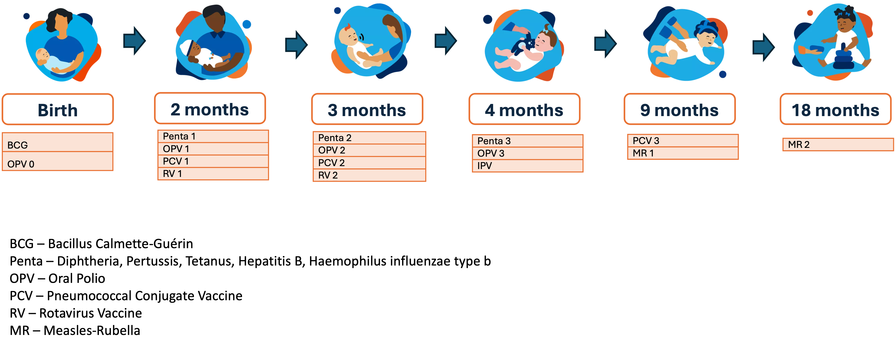
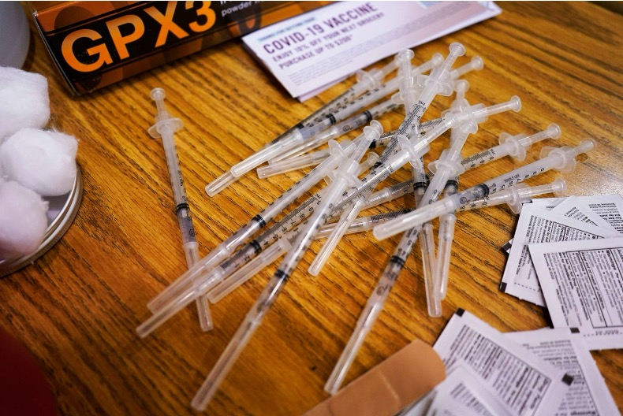
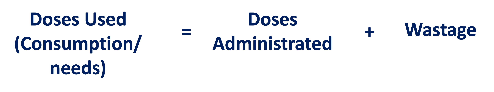
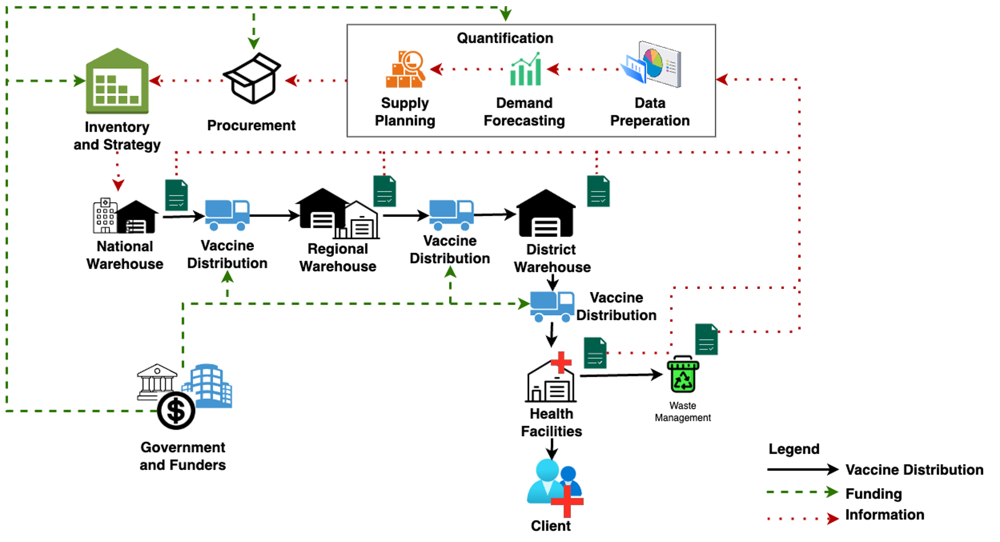
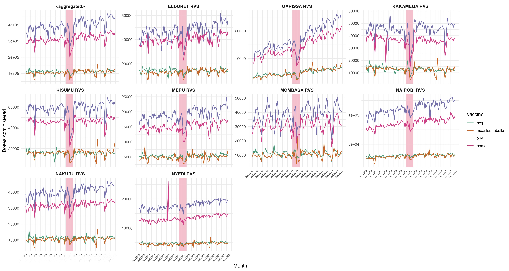
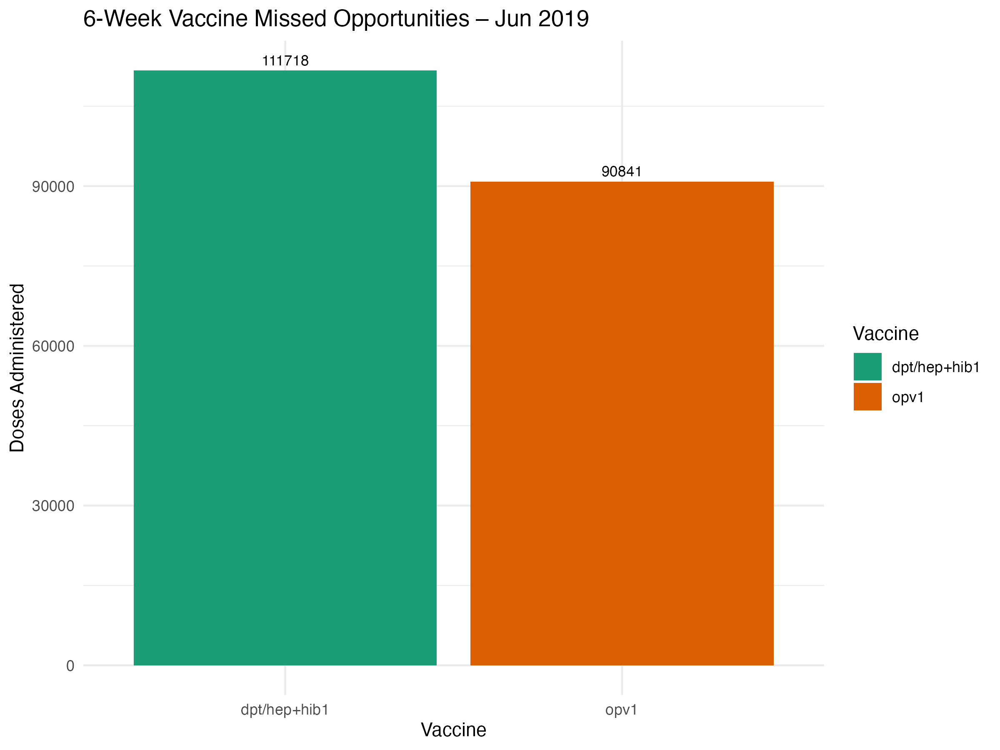
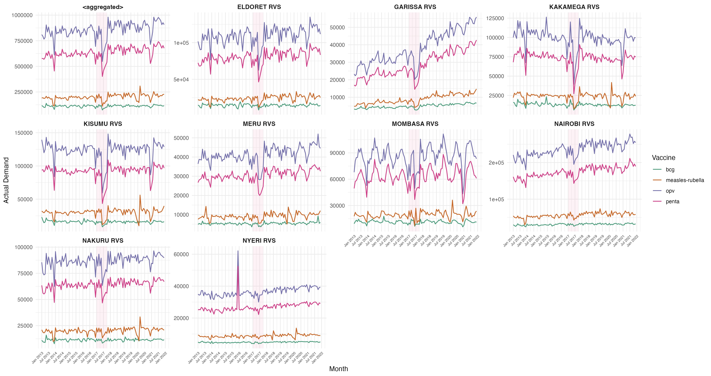
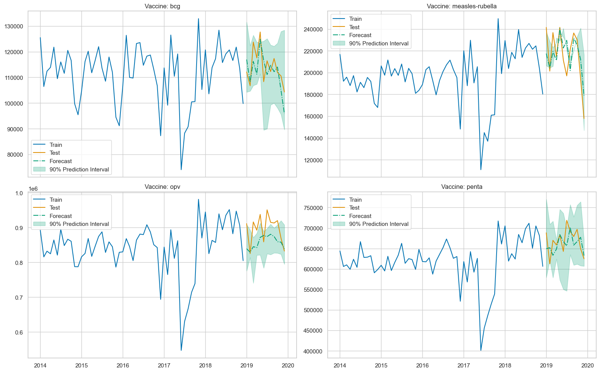

| Variable | EPI_Log | Gavi_Tool | FSP_Tool |
|---|---|---|---|
| Purpose | For national immunisation schedules | For funding allocations | For national immunisation schedules |
| Vaccines Targeted | BCG, Penta, OPV, Measles, PCV, Rotavirus | Penta, Measles, PCV, Rotavirus | BCG, Penta, OPV, Measles, PCV, Rotavirus |
| Method | Demographic Forecasting | Demographic Forecasting | Weighted Demographic + Consumption + Session-based Forecasting |
| Input Variables | Population growth rate, birth cohort rate, surviving infants rate, wastage rate. | Surviving infants, coverage rates, wastage rates, buffer stock. | Population growth, coverage, dropout rate, historical consumption, stockouts, session frequency. |
| Output Variables | National vaccine demand | National vaccine demand | National vaccine demand |
| Input Data Frequency | Yearly | Yearly | Monthly |
| Forecast Horizon | 1 year | 5 years | 5 years |
| Time Granularity | Yearly | Yearly | Yearly |
Missed in the Numbers:
Quantifying Demand Gaps in Vaccine Supply Chains
Udeshi Salgado
Data Lab for Social Good, Cardiff University, UK
Lead Supervisor: Professor Bahman Rostami-Tabar
Co-supervisors: Dr Thanos E Goltsos, Dr Geraint Palmer, Dr Xun Wang
2025-05-27
Outline
- Immunisation Supply Chain
- Forecasting Problem
- Data & Methodology
- Model Performance Evaluation
- Way Forward
Background
- 1 in 5 children worldwide lack access to lifesaving vaccines.
- Globally, in 2023, 14.5 million children were zero-dose.
- An additional 6.5 million children are partially vaccinated.
- Annually, 1.5 million children under five die from vaccine-preventable diseases.
source: WHO
What is Routine Immunisation?
- Regular administration of vaccines for infants, children, and adults
- Builds population immunity and prevents disease
- Immunisation at birth is critical
- Newborns are highly vulnerable to severe infections
- Delays can lead to serious illness or death
- Newborns are highly vulnerable to severe infections
Most Countries Recommended Vaccine Schedule
Vaccines
Vial
Dose
Administered
Wastage

Open Vial
Closed Vial

The Immunisation Supply Chain
What we want to achieve?
✅ Reduce missed opportunities (stock out)
✅ Accurate wastage rate
✅ Lower inventory costs
✅ Lower societal costs
✅ and better coordination
Outline
- Immunisation Supply Chain
- Forecasting Problem
- Data & Methodology
- Model Performance Evaluation
- Way Forward
Classical Approaches in Practice
Forecasting Policies in Practice
| Feature | EPI_Log | Gavi Tool | FSP Tool |
|---|---|---|---|
| Variable Wastage Rate | ✓ | ✓ | ✓ |
| Stockouts considered | ✗ | ✗ | ✓ |
| Buffer Stock (25% of demand) | ✓ | ✓ | ✓ |
| Variable vaccine coverage per dose | ✗ | ✓ | ✓ |
Forecasts are annual and at the national level
What’s Missing from Current Approaches in Practice?
✗ Relies heavily on demographic estimates
✗ Wastage rate is fixed, not based on historical data
✗ Only adjusts for stockout days
✗ Captures observed demand, ignores missed vaccinations
✗ Uses generic buffer stock rates
✗ Includes buffer and wastage in forecasts, increasing uncertainty
✗ Lacks integration between forecasting and inventory management
How Can We Do Better?
- Actual vaccine demand calculated as:
\[ \text{Actual Demand} = \text{Doses Administered} + \text{Missed Opportunities} \]
Demand forecasted using quantile regression to produce prediction intervals.
Forecast integrated with a Newsvendor model to determine order quantities under uncertainty.
Outline
- Immunisation Supply Chain
- Forecasting Problem
- Data & Methodology
- Model Performance Evaluation
- Way Forward
Data
- Vaccine consumption data from an African country (Jan 2013 – Dec 2021)
- Four vaccines:
- Measles~rubella
- BCG – for tuberculosis
- Penta – combination vaccine for diphtheria, tetanus, pertussis, hepatitis B, and Hib
- OPV – oral polio vaccine
- 306 sub-counties, 47 counties & 9 regions
- Total: 1,452 time series
Doses administrated: National & Regions
Missed Vaccination Opportunities
- At 6 weeks, infants receive Penta 1, OPV 1, PCV 1, and RV 1 in a single session
- In this dataset, only Penta 1 and OPV 1 are available
- Differences in counts reveal missed vaccination opportunities

- Hence,
Actual Demand = Doses Administrated + Missed Opportunities
Actual Demand: National & Regions
Forecasting Setup
- Forecasting method: Quantile Regression using LightGBM
- Forecast horizon: 12 months
- Features: seasonality (sin/cos), month, year, lag-12, vaccine type
- Target: actual demand (administered + missed opportunities)
- Probabilistic output: 90% prediction interval (10th, 50th, 90th quantiles)
- Cross-sectional training across vaccines with national monthly data
Vaccine Demand Forecasts (2019)
Inventory Integration
- Inventory planning is based on a Newsvendor-style model
- Balances risk of under-ordering (missed vaccinations) and over-ordering (wastage)
- Adapted to incorporate forecast uncertainty and vaccine-specific wastage
- Uses probabilistic forecasts instead of fixed demand distributions
1. Probabilistic Forecasts
- Uses 50th and 90th percentile forecasts from quantile regression
- Wastage Adjustment
- Adjusts median forecast using vaccine-specific wastage rates calculated from historical data \[ \text{Adjusted Demand} = \text{Forecast} \times (1 + \text{Wastage Rate}) \]
Uncertainty Buffer
- Adds safety stock using the forecast spread.
- 1.28 is the z-score for an 90% service level
\[ \text{Uncertainty Buffer} = 1.28 \times (\text{Forecast}_{90} - \text{Forecast}) \]
- Adds safety stock using the forecast spread.
Final Order Quantity
\[ \begin{align} \text{Order Quantity} &= \text{Adjusted Demand} + \text{Uncertainty Buffer} \\\\ &= \text{Forecast} \times (1 + \text{Wastage Rate}) \\\\ &\quad + 1.28 \times (\text{Forecast}_{90} - \text{Forecast}) \end{align} \]
Baseline Forecasting Models
EPI_Log
\[
\hat{D}_{t,v} = \left\lceil \hat{SI}_t \times d_v \times (1 + w_v) \times c \times \left(1 + \frac{b_v}{12} \right) \right\rceil
\]
Gavi Tool
\[
\hat{D}_{t,v} = \left\lceil \hat{SI}_t \times (d_v - 1) \times c_1 \times (1 + w_v) + \newline \hat{SI}_t \times c_2 \times (1 + w_v) \times \left(1 + \frac{b_v}{12} \right) + \text{Adj} \right\rceil
\]
FSP Tool
\[
D_{final} = w_1 \times D_{demographic} + w_2 \times D_{consumption} + w_3 \times D_{session}
\]
Variable Definitions
- \(\hat{D}_{t,v}\): Forecasted demand for vaccine v at time t
- \(\hat{SI}_t\): Surviving infants at time t
- \(d_v\): Doses per child for vaccine v
- \(c\): Immunisation coverage
- \(c_1\), \(c_2\): First- and last-dose coverage
- \(w_v\): Wastage rate
- \(b_v\): Buffer stock (months)
- Adj: Programmatic/top-level adjustment
- \(w_1\), \(w_2\), \(w_3\): Weights for hybrid model inputs
Performance Evaluation Metrics
MAPE
\[ \scriptsize \text{MAPE} = \frac{1}{n} \sum_{i=1}^{n} \left| \frac{\text{Forecast}_i - \text{Actual}_i}{\text{Actual}_i} \right| \]
Service Level
\[ \scriptsize \text{Service Level} = \frac{\min(\text{Forecast},\ \text{Actual})}{\text{Actual}} \]
Overstock Rate
\[ \scriptsize \text{Overstock} = \frac{\max(0,\ \text{Forecast} - \text{Actual})}{\text{Actual}} \]
Understock Rate
\[
\scriptsize
\text{Understock} = \frac{\max(0,\ \text{Actual} - \text{Forecast})}{\text{Actual}}
\]
Outline
- Immunisation Supply Chain
- Forecasting Problem
- Data & Methodology
- Model Performance Evaluation
- Way Forward
BCG – Performance Metrics
| Metric | Quantile.Regression | FSP.Tool | EPI.Log |
|---|---|---|---|
| MAPE | 0.181 | 0.09 | 0.978 |
| Overstock | 0.181 | 0.00 | 0.978 |
| Understock | 0.000 | 0.09 | 0.000 |
| Service Level | 1.000 | 0.91 | 1.000 |
Measles~Rubella – Performance Metrics
| Metric | Quantile.Regression | FSP.Tool | EPI.Log | GAVI |
|---|---|---|---|---|
| MAPE | 0.205 | 0.066 | 0.746 | 635.715 |
| Overstock | 0.205 | 0.000 | 0.746 | 635.715 |
| Understock | 0.000 | 0.066 | 0.000 | 0.000 |
| Service Level | 1.000 | 0.934 | 1.000 | 1.000 |
OPV – Performance Metrics
| Metric | Quantile.Regression | FSP.Tool | EPI.Log | GAVI |
|---|---|---|---|---|
| MAPE | 0.114 | 0.629 | 0.261 | 257.414 |
| Overstock | 0.114 | 0.000 | 0.000 | 257.414 |
| Understock | 0.000 | 0.629 | 0.261 | 0.000 |
| Service Level | 1.000 | 0.371 | 0.739 | 1.000 |
Penta – Performance Metrics
| Metric | Quantile.Regression | FSP.Tool | EPI.Log | GAVI |
|---|---|---|---|---|
| MAPE | 0.15 | 0.704 | 0.257 | 262.466 |
| Overstock | 0.15 | 0.000 | 0.000 | 262.466 |
| Understock | 0.00 | 0.704 | 0.257 | 0.000 |
| Service Level | 1.00 | 0.296 | 0.743 | 1.000 |
Outline
- Immunisation Supply Chain
- Forecasting Problem
- Data & Methodology
- Model Performance Evaluation
- Way Forward
Next Steps
Expand analysis to subnational (county / sub-county) levels
Include missed opportunities explicitly in demand estimates
Explore other inventory policies linked to demand variability
Acknowledgement
- John and Snow Inc (JSI) team
- Dr. Laila Akhlaghi
- Wendy Prosser
About me
Udeshi Salgado
1st year PhD Student
DL4SG, Cardiff University, UK
LinkedIn: udeshi-salgado
Slides: udeshisalgado.github.io/talks
Outline of my talk
- Immunisation Supply Chain
- Forecasting Problem
- Data & Methodology
- Model Performance Evaluation
- Way Forward

© 2025 Udeshi Salgado – DL4SG, Cardiff University